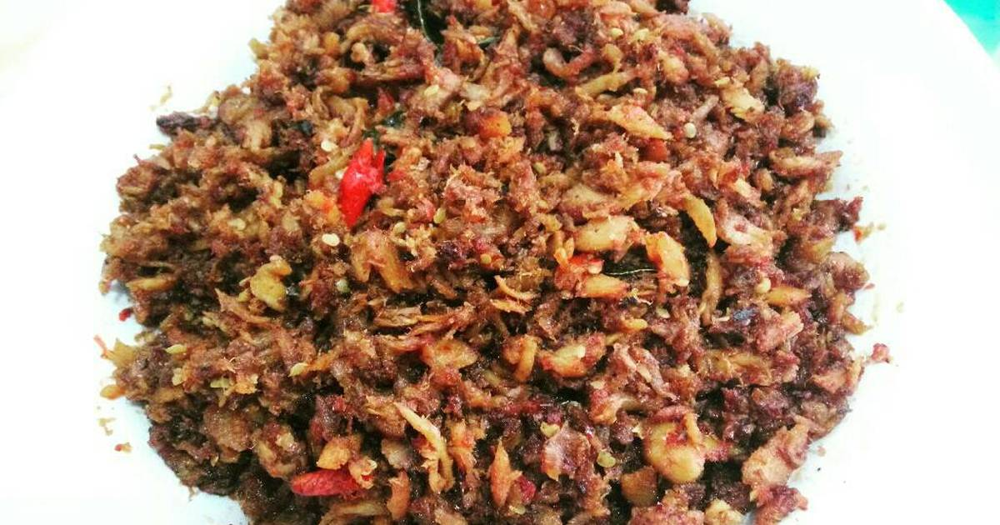

Authentic Food From
MANADO

Tinutuan
Makanan ini merupakan bubur khas Manado dan merupakan sangat sehat karena mengandung sayur dan zat baik yang berguna untuk tubuh.
More InfoAyam Bumbu Woku
Bumbu dari Ayam Woku sendiri khas dari Manado dengan rempah-rempahnya. Terdapat versi kuah dan kentalnya.
More Info

Cakalang Fufu
Cakalang adalah ikan khas Manado yang terkenal akan rasanya yang enak dan terbuat dari ikan cakalang atau ikan tongkol putih yang diasap (fufu).
More Info